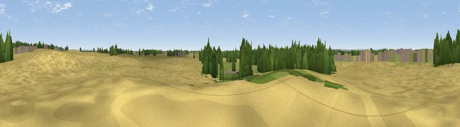

Waile Hill
#34694 in England · top 64% of its area beats it · near ColtonThe view, rendered

A 360° render of this exact spot computed from the terrain model, tree cover and land cover — summer colours, afternoon light, calibrated against photographs of famous viewpoints. Real trees, hedges and buildings will differ in detail.
The panorama
Grey silhouette: terrain skyline in each direction (720 bearings, Earth curvature and refraction included). Dashed green: skyline with trees (+15 m) and buildings (+8 m) as obstacles. Blue strip: how far the ground is visible on each bearing.
Where the view opens
Wedge length = distance to the farthest visible ground on that bearing (vegetation-aware). Rings at 10, 25 and 50 km.
What fills the view
68% cropland · 15% woodland · 14% grassland · 3% built-up
Angular shares of the visible panorama (visual magnitude), not map area. Landscape diversity 0.40 (0–1 Shannon).
Key numbers
More beautiful places nearby
The staircase of upgrades: each row has a higher view potential than everything closer. Driving times are estimates from straight-line distance, calibrated against real road routing — check an actual route before setting out.
| Place | Direction | Drive | Score |
|---|---|---|---|
| Bilbrough Hill | NNE · 2 km | ~4 min | 41.5 |
| Stock Hill | NE · 3 km | ~7 min | 51.2 |
| Viewpoint near Rufforth | NNE · 7 km | ~15 min | 55.6 |
| Viewpoint near Hambleton | S · 13 km | ~24 min | 57.7 |
| Viewpoint near Micklefield | SW · 15 km | ~27 min | 65.7 |
| Viewpoint near North Rigton | W · 26 km | ~42 min | 66.6 |
| Viewpoint near Crayke | N · 26 km | ~42 min | 69.2 |
| Viewpoint near Brandsby | NNE · 29 km | ~45 min | 71.8 |
53.89741, -1.19987 · source: osm peak · position refined by local search. Computed location — check access rights before visiting.